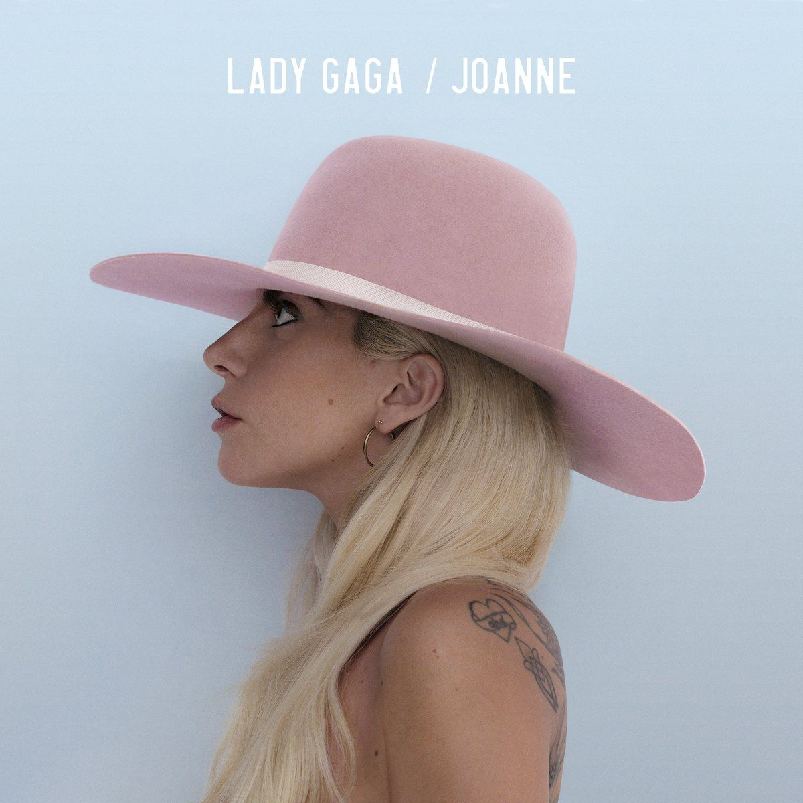
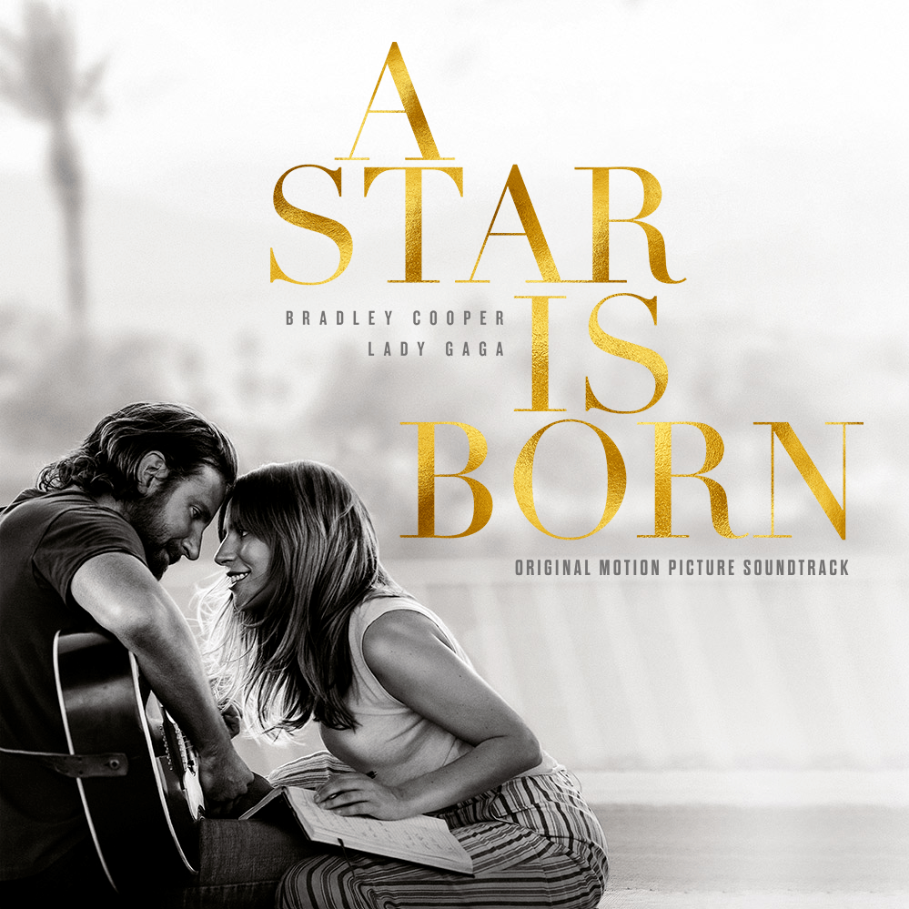
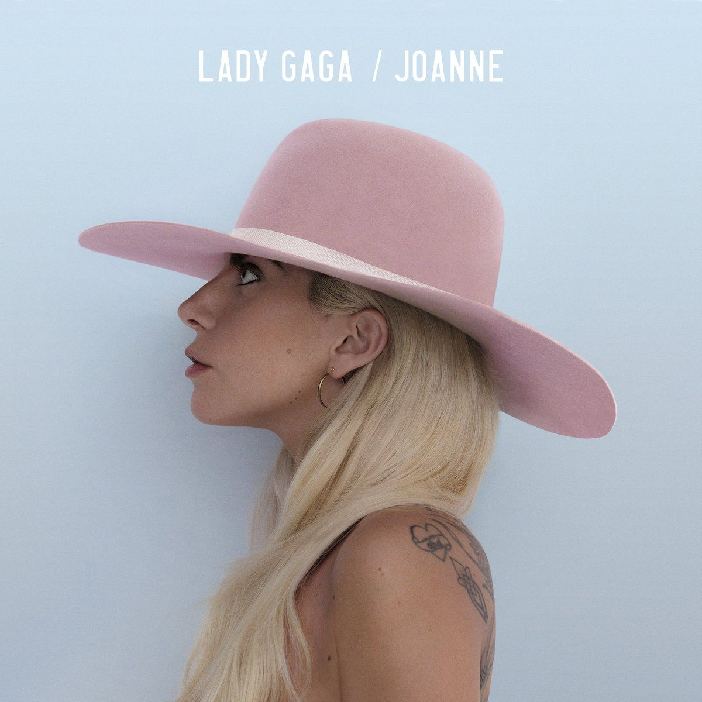
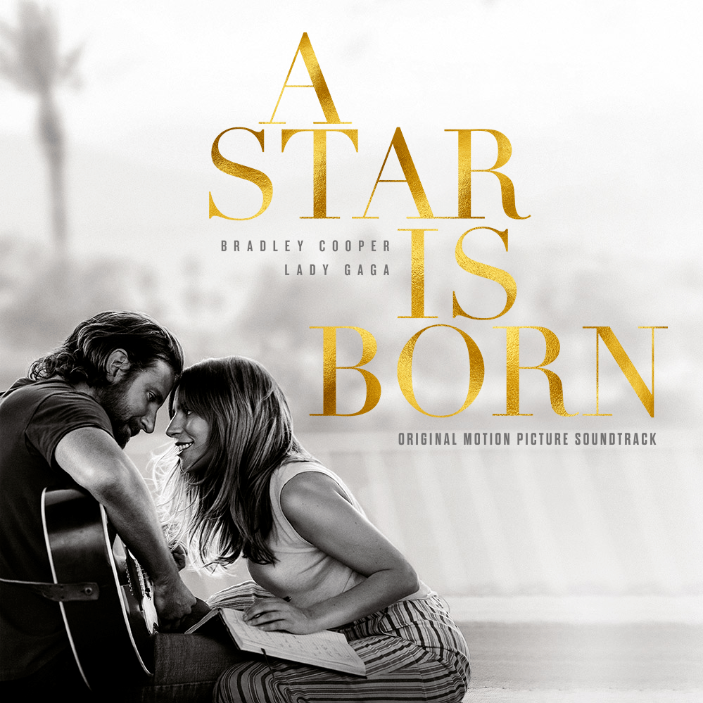

Stefani Joanne Angelina Germanotta (Nueva York, 28 de marzo de 1986), más conocida por su nombre artístico Lady Gaga, es una cantante, compositora, productora, bailarina, actriz, activista y diseñadora de moda estadounidense.
Quien es

Nacida y criada en la ciudad de Nueva York, estudió en la escuela Convent of the Sacred Heart y asistió por un tiempo breve a la Tisch School of the Arts, perteneciente a la Universidad de Nueva York, hasta que abandonó sus estudios para enfocarse en su carrera musical. Fue así como irrumpió en la escena del rock en el Lower East Side de Manhattan y firmó un contrato con Streamline Records hacia fines de 2007. En la época en que trabajaba como compositora para dicha discográfica, su voz llamó la atención del artista Akon, quien la hizo firmar un contrato con Kon Live Distribution.
Carrera Musical

Entre sus mayores éxitos se encuentran Just Dance, Poker Face, LoveGame, Paparazzi, Bad Romance, Telephone o Alejandro. En abril de 2010 Bad Romance supera los 200 millones de visitas y se convierte en el vídeo más visto de la historia de You-Tube. 'Time' la elige artista del año. Gaga lanzó su segundo álbum de estudio, Born This Way, el 23 de mayo de 2011. Además de más de ocho millones de copias en ventas en todo el mundo, Born This Way recibió tres nominaciones a los premios Grammy.
Su siguiente álbum de estudio ARTPOP fue puesto a la venta el 6 de noviembre de 2013 con críticas desiguales. Colaboró con el cantante Tony Bennett en un álbum de clásicos del jazz al que se tituló Cheek to Cheek y que fue estrenado el 19 de septiembre de 2014, entrando en lo más alto del Billboard 200, convirtiéndose en su tercer número uno en los Estados Unidos. Este álbum recibió un premio Grammy. El 6 de enero de 2019, ganó un Globo de Oro en la categoría Mejor canción original por Shallow de la película A Star Is Born. Stupid Love, el sencillo principal de su sexto álbum de estudio Chromatica, se lanzó el 28 de febrero de 2020.
Albumes
 


